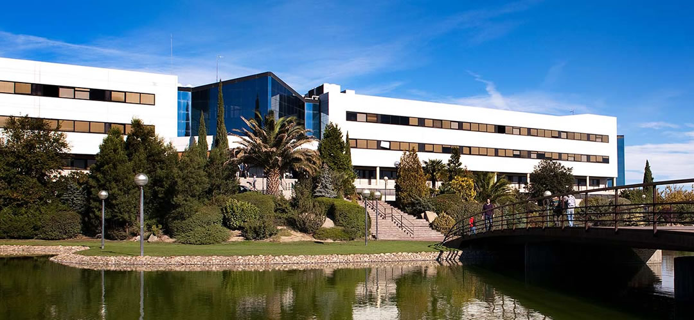
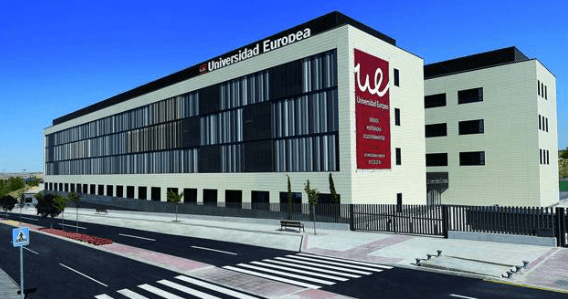
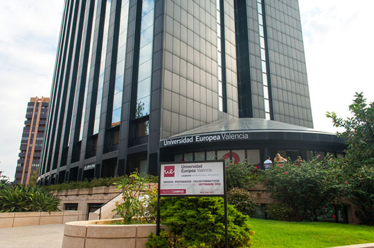

Instalaciones
Quienes somos
|  |
Universidad Europea Campus de Villaviciosa de OdónSi eres de los que van más allá y estás planteándote cómo será la vida de universitario, no puedes perderte la oportunidad de conocer la Universidad Europea a través de nuestros Campus Tour por áreas. Durante esta sesión descubrirás como vas a avanzar y crecer profesionalmente cada año a través de nuestra metodología práctica basada en casos reales. Ven al campus de Villaviciosa de Odón y conoce de primera mano nuestra universidad y nuestras titulaciones en detalle, aprovecha esta oportunidad para resolver todas tus dudas y convertirte en el profesional que deseas ser. Te esperamos el 20 de noviembre, para que conozcas, a través de nuestros asesores nuestros grados, dobles grados y ciclos formativos. Donde impartimos los grados de Administración de Sistemas Informáticos en red y Diseño de aplicaciones Multiplataforma. |
|  |
Universidad Europea Campus de AlcobendasEste fantástico campus situado en Alcobendas cuenta con instalaciones de todo tipo para que tu paso por la universidad sea una mejor experiencia: Aula Polivalente, Aulas de Enfermería, una Aula técnica de diagnosticado, una biblioteca completamente equipada son algunas de las instalaciones más importantes, pero te invitamos a que conozcas las demás. Además impartimos los CFGS de ASIR y DAM entre otras titulaciones. |
|  |
Universidad Europea Campus ValenciaEl campus de la Universidad Europea en Valencia se encuentra en una ubicación inmejorable, contando con unas instalaciones modernas, adecuada a los hábitos de estudio actuales, cuenta con una red wifi de Alta velocidad y con aula dedicadas a numerosas titulaciones como Diseño de Aplicaciones Web, un CFGS que se imparte en nuestro campus y que cuenta con un gran número de personas todos los años. |
Profesores
Página Principal
Horarios
Donde estamos